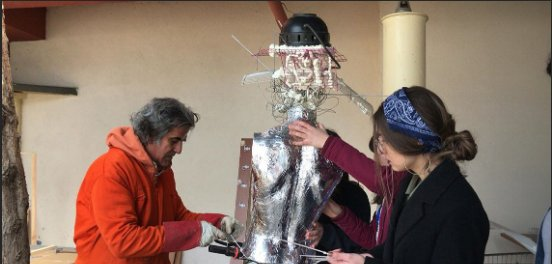
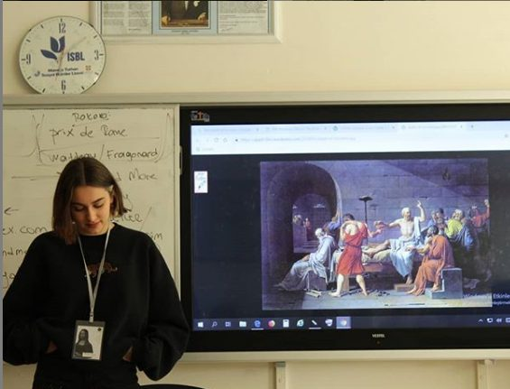
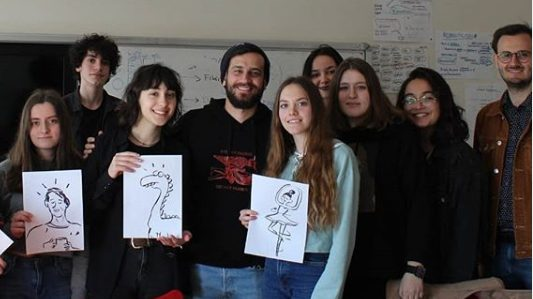

Selected work / 01—05The work,
The work,
with the numbers
Each case shows who I had to convince, how I reached them and what happened.
01
Pangea Art Days
Contacted 50+ organizations and raised TRY 50K in sponsorship for a free festival with 160 participants.
→ 02Gratis
Walked into 20 local businesses that had never heard of a new store. 11 owners came in.
→ 03Efor Lojistik
Turned 731 hours of field research into Excel and AI routines the owner adopted.
→ 04Last Penny × Efes
Came up with a staff-led Instagram series for an Efes partnership, reaching ~50K views.
→ 05Eventbrite lead plan
Split 24 real Italian event organizers into two segments and scored them, with an opening angle for each.
→


